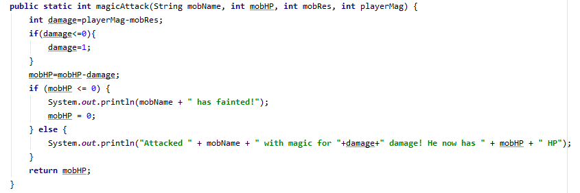

yourTurn
This is the function that runs during the player phase. The function requires the parameters of the player's input decision (1 for attack, 2 for magic, 3 for heal) and the stats and names of all participants in the battle (via the arrays and 2D arrays).
The first if statements are used to get the player's decision. The if statements within each decision are used to get the player's decisions on their targets.
The function returns the health of whatever character is affected by the player's decision.
attack
The attack function only runs when the player chooses to attack by inputting 1 and has chosen the enemy to attack. The parameters include the enemy's name, HP, and DEF, as well as the player's ATK.
The function calculates the damage dealt to the enemy and returns the resultant HP of the enemy.
magicAttack

This runs when the player inputs 2 and has chosen the enemy to attack. This function requires the parameter of the enemy's HP, RES, and the player's MAG.
The function calculates the magic damage dealt and returns the resultant HP of the enemy.
heal
The function runs when the player inputs 3 and has chosen the target of the heal. The parameters include the HP of the target being healed, the MAG of the healer, and the name of the receiver.
The function calculates and returns the resultant HP of the receiver of the heal.
attackDecision

This function gets the player's input for the target they want to attack or heal. It requires the names of both the enemy which will be used to specify the target. It also requires the boolean of whether to heal or attack.
If heal is chosen, it will return the player's input on the type of healing. If not, it will return the player's input on the target of the attack.
enemyTurn
This function runs during the enemy phase for each enemy. The function's parameter includes all battle participant's stats and the names of all of the participants. The parameters will be inputted into other functions depending on the enemy's stats via if statements.
The if statements check the HP of both enemies. If the HP of the enemy is less than 5, then it runs the function: enemySelfHeal, which heals itself. If the enemy's partner' HP is less than 5, then it runs: enemyPartnerHeal, which heals its partner. If they are both above 5 HP, it runs: enemyAtk, which is a function that attacks the player's party.
This function returns the HP the enemy's HP that is being healed or returns the HP of the player's party if enemyAtk runs.